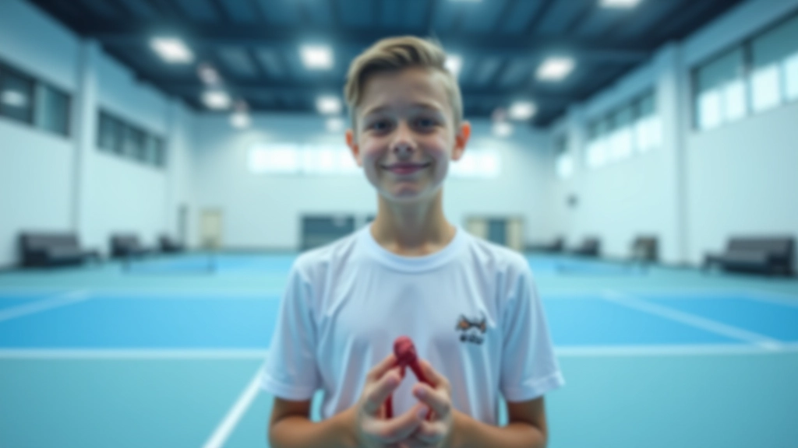
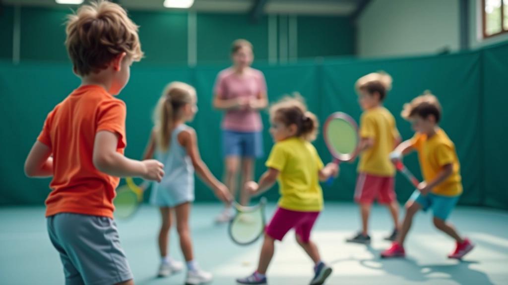
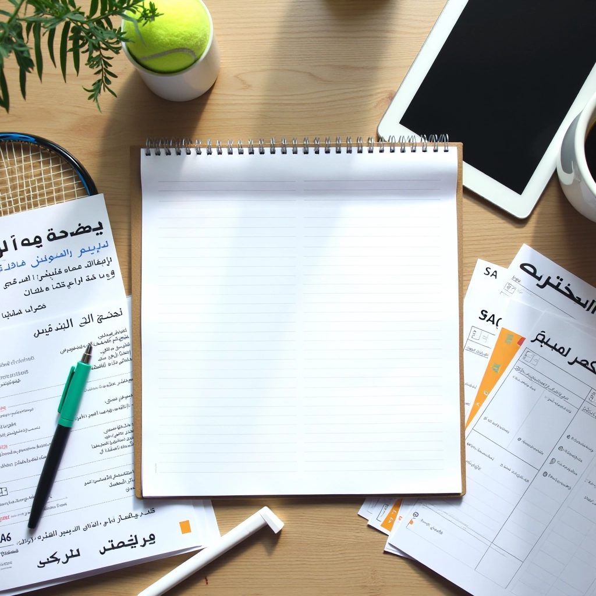

اختيار المضرب المناسب للأطفال
دليل شامل لاختيار حجم ووزن المضرب الصحيح حسب عمر الطفل وقدرته البدنية.
خطوات عملية لاختيار الأكاديمية المناسبة والتحضير الأساسي قبل البدء في التدريبات الأولى.

التنس ليس مجرد رياضة — إنه تجربة حياتية. عندما يبدأ طفلك اللعب، يتعلم أكثر من مجرد الضربات والتكتيكات. يكتسب الثقة، والانضباط الذاتي، والقدرة على التعامل مع الفوز والخسارة. وكل ذلك يحدث بينما يستمتع باللعب.
لكن هناك نقطة مهمة: البداية الصحيحة تحدث فرقاً حقيقياً. عندما تختار الأكاديمية المناسبة والمدربين المناسبين، يشعر طفلك بالأمان والتشجيع. إنه يتعلم الأساسيات بشكل صحيح منذ البداية، وهذا يعني أنه لن يضطر لاحقاً لتصحيح العادات السيئة.
اختيار الأكاديمية ليس بالقرار السهل. ستجد خيارات كثيرة، لكن ليست كلها متساوية. هناك عوامل محددة تجب أن تبحث عنها.
أولاً، تفقد المدربين. المدرب الجيد لا يعلم التنس فقط — يعلم كيفية التعامل مع الأطفال. يصبر معهم. يشرح الأشياء بطرق يفهمونها. يلاحظ الأطفال الذين يكافحون ويساعدهم بدون تخجيل. ابحث عن تاريخهم: هل لديهم خبرة مع فئة عمر طفلك؟ هل عملوا في أكاديميات أخرى؟
ثانياً، تفقد المرافق نفسها. الملاعب نظيفة؟ المعدات في حالة جيدة؟ هل هناك مساحة آمنة للأطفال الصغار؟ الأكاديمية الجيدة تحافظ على معايير عالية. الملعب الداخلي أفضل دائماً في البدايات — يقلل من متغيرات الطقس.


البرنامج الجيد يقسم الأطفال حسب العمر والمستوى. لا تريد أن يلعب طفلك البالغ 8 سنوات مع شاب بعمر 16 سنة. الفروقات في القوة والتركيز والفهم كبيرة جداً.
ابحث عن برنامج يبدأ من الأساسيات الحقيقية: كيفية الإمساك بالمضرب، الوقفة الصحيحة، الخطوات القدمية، الضربة الأمامية والخلفية البسيطة. في الأسابيع الأولى، الكثير من الأطفال لا يلعبون مباريات حقيقية — يعملون على التكنيك. هذا صحيح تماماً. البناء الأساسي أولاً، ثم الألعاب لاحقاً.
كم عدد الأطفال في الجلسة الواحدة؟ الجلسات الصغيرة أفضل — 4 إلى 6 أطفال مع مدرب واحد. هذا يعني أن كل طفل يحصل على انتباه حقيقي.
لا تحتاج لكل شيء في البداية. مضرب واحد جيد (بالحجم الصحيح لعمر طفلك)، حذاء تنس مناسب، وملابس رياضية مريحة. المضرب هو الاستثمار الأهم — لا تختر الأرخص، لكن لا تنفق الكثير على مبتدئ.
اشرح له لماذا اخترتم هذه الأكاديمية. اخبره أن التنس ممتع، وأنه قد يكون صعباً في البداية، وأن هذا طبيعي تماماً. قل له أنك فخور به لأنه يجرب شيئاً جديداً. الدعم النفسي من الوالدين مهم جداً.
الطفل لن يصبح لاعباً محترفاً بعد أسبوعين. الهدف الأول هو أن يستمتع بالرياضة ويتعلم المبادئ الأساسية. بعد 6 إلى 8 أسابيع، ستلاحظ تحسناً حقيقياً في التوازن والتنسيق والثقة.

فريق المحتوى التحريري
كتبه فريق أكاديمية النيل للتنس التحريري، متخصص في توفير إرشادات عملية وموثوقة حول التسجيل والبرامج التدريبية.
المدرب يرى أشياء أنت لا تراها. يلاحظ المشاكل الصغيرة قبل أن تصبح عادات سيئة. اطلب ملاحظات منتظمة عن تقدم طفلك.
المباريات تأتي لاحقاً. في البداية، التركيز على المهارات والاستمتاع. طفل يستمتع بالرياضة سيستمر فيها. طفل تحت ضغط قد يكرهها.
شجع الممارسة في المنزل إذا أراد طفلك. حتى تمارين بسيطة مع الحبل أو تمرينات التوازن تساعد. لكن لا تكن معلماً في البيت — اترك التدريس للمدرب المحترف.
التنس رياضة آمنة نسبياً، لكن الإصابات الصغيرة قد تحدث. تأكد أن طفلك يحترم الإحماء والتمدد. أخبر المدرب فوراً عن أي ألم أو إزعاج.
كم من الوقت يستغرق؟ هذا يعتمد على أهدافك. إذا كان الهدف هو ممارسة رياضة ممتعة والاستمتاع، جلستان في الأسبوع كافية. إذا كان طفلك يريد أن يصبح جاداً أكثر، قد تصل إلى ثلاث أو أربع جلسات.
الانتظام أهم من التكرار. أفضل من جلستين منتظمتين كل أسبوع أفضل بكثير من خمس جلسات في أسبوع ثم لا شيء في الأسبوع التالي. الدماغ والعضلات تتعلم من الممارسة المنتظمة.
توقع أيضاً أن يكون هناك تذبذب في الدافع. بعض الأسابيع، طفلك سيكون متحمساً. أسابيع أخرى قد يشعر بالملل أو الإحباط. هذا طبيعي تماماً. الدور الخاص بك هنا هو تشجيعه والمساعدة على تجاوز المرحلة الصعبة.
نتائج التعلم والتقدم تختلف من طفل لآخر. كل طفل له وتيرته الخاصة وأسلوب تعلمه الفريد. المعلومات هنا توجيهية عامة بناءً على خبرات المدربين والأكاديميات. استشر مدرب مختص لتقييم احتياجات طفلك الخاصة.
بدء مسيرة طفلك في التنس هو استثمار في صحته وثقته وشخصيته. اختيار الأكاديمية الصحيحة والتحضير الجيد يضعان أساساً قوياً. لكن تذكر: الهدف الأول هو أن يستمتع طفلك. الباقي سيأتي بشكل طبيعي.
الآن أنت جاهز. اختر الأكاديمية، احصل على المعدات، وأخبر طفلك أنه في طريقه لتجربة جديدة وممتعة. من يعرف؟ قد يصبح هذا بداية شغف حقيقي.
هل تريد معرفة المزيد عن اختيار الأكاديمية المناسبة؟
اقرأ دليل تقييم الأكاديميات
دليل شامل لاختيار حجم ووزن المضرب الصحيح حسب عمر الطفل وقدرته البدنية.

معايير تقييم جودة الأكاديمية من المدربين والمرافق والبرامج التدريبية المقدمة.

كيفية وضع أهداف واقعية لطفلك والتعامل مع التقدم والتحديات في رحلة التنس.